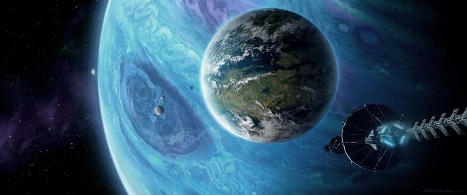
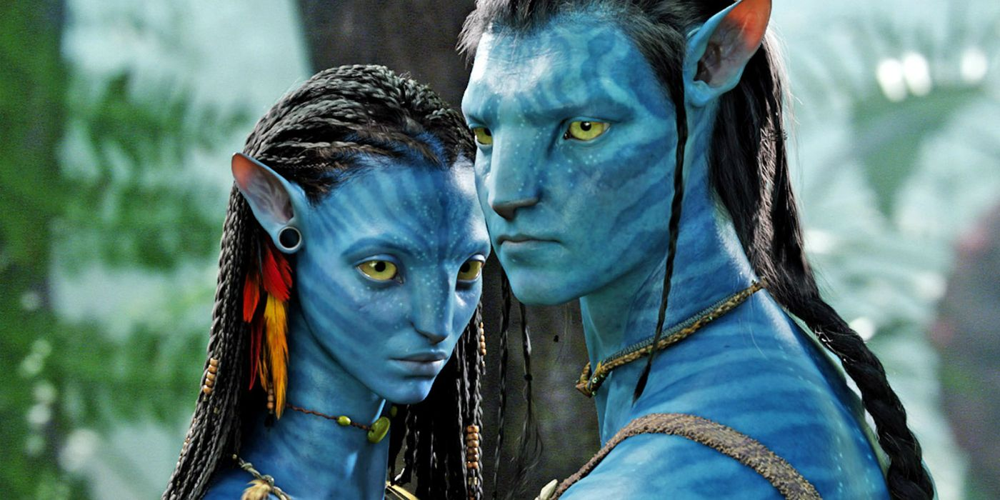
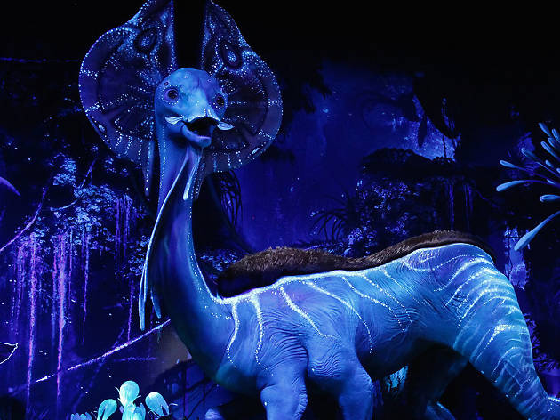

The world of Avatar
Pandora, something like you have never seen.

Pandora is the fifth moon of the gas giant Polyphemus (both names reference figures in Greek mythology), which orbits Alpha Centauri A in the Alpha Centauri System, the closest star system to our own sun.
Discovered by space telescopes at some point between 2050 and 2077, Pandora has been the single most interesting thing to happen to the human race in hundreds of years. The news services love to run clips of the wild scenery on Pandora and its bizarre flora and fauna.
To the cultures of Earth, Pandora is mysterious, primal and terrifying. Even from orbit, the scope of florae present on the surface indicates a moon brimming with life. One of the creatures on Pandora is the direhorse, a gray-skinned, hexapodal horse-like animal with bioluminescent qualities that the Na'vi ride when hunting. The Na'vi also ride the mountain banshee to hunt from the air, but the hunter can become prey in the presence of the great leonopteryx. In the canopy below, other deadly yet exotic animals roam: vicious packs of viperwolves, thick skinned hammerhead titanotheres and the most fearsome creature of all, the thanator. Other than the richness of varying colors, the trees resemble those of Earth. They have the familiar trunks, branches and leaves, though due to the difference in gravity, many of the shapes appear strange to humans and the proportions are greater because of the lower gravity. The trees and plant life of Pandora have formed electrochemical connections between their roots and effectively act as neurons, creating a moon-wide "brain" that has achieved sentience, which is known to the Na'vi as Eywa.
The story of Avatar
A classic about alien creatures, culture, action and love.

In 2154, humans have depleted Earth's natural resources, leading to a severe energy crisis. The Resources Development Administration (RDA for short) mines for a valuable mineral — unobtanium — on Pandora, a densely forested habitable moon orbiting the gas giant Polyphemus in the Alpha Centauri star system. Pandora, whose atmosphere is poisonous to humans, is inhabited by the Na'vi, a species of 10-foot tall (3.0 m), blue-skinned, sapient humanoids that live in harmony with nature and worship a mother goddess named Eywa.
To explore Pandora's biosphere, scientists use Na'vi-human hybrids called "avatars", operated by genetically matched humans; Jake Sully, a paraplegic former Marine, replaces his deceased identical twin brother as an operator of one. Dr. Grace Augustine, head of the Avatar Program, considers Sully an inadequate replacement but accepts his assignment as a bodyguard. While escorting the avatars of Grace and fellow scientist Dr. Norm Spellman as they collect biological data, Jake's avatar is attacked by a thanator and flees into the forest, where he is rescued by Neytiri, a female Na'vi. Witnessing an auspicious sign, she takes him to her clan, whereupon Neytiri's mother Mo'at, the clan's spiritual leader, orders her daughter to initiate Jake into their society.
Colonel Miles Quaritch, head of RDA's private security force, promises Jake that the company will restore his legs if he gathers information about the Na'vi and the clan's gathering place, a giant tree called Hometree,[35] which stands above the richest deposit of unobtanium in the area. When Grace learns of this, she transfers herself, Jake, and Norm to an outpost. Over the following three months, Jake grows to sympathize with the natives. After Jake is initiated into the tribe, he and Neytiri choose each other as mates, and soon afterward, Jake reveals his change of allegiance when he attempts to disable a bulldozer that threatens to destroy a sacred Na'vi site. When Quaritch shows a video recording of Jake's attack on the bulldozer to Administrator Parker Selfridge,[36] and another in which Jake admits that the Na'vi will never abandon Hometree, Selfridge orders Hometree destroyed.
Despite Grace's argument that destroying Hometree could damage the biological neural network native to Pandora, Selfridge gives Jake and Grace one hour to convince the Na'vi to evacuate before commencing the attack. While trying to warn the Na'vi, Jake confesses to being a spy, and the Na'vi take him and Grace captive. Seeing this, Quaritch's men destroy Hometree, killing Neytiri's father (the clan chief) and many others. Mo'at frees Jake and Grace, but they are detached from their avatars and imprisoned by Quaritch's forces. Pilot Trudy Chacón, disgusted by Quaritch's brutality, frees Jake, Grace, and Norm, and airlifts them to Grace's outpost, but during the escape Quaritch fires at them, hitting Grace.
During the subsequent battle, the Na'vi suffer heavy casualties, including Tsu'tey and Trudy; but are rescued when Pandoran wildlife unexpectedly join the attack and overwhelm the humans, which Neytiri interprets as Eywa's answer to Jake's prayer. Jake destroys a makeshift bomber before it can reach the Tree of Souls; Quaritch, wearing an AMP suit, escapes from his own damaged aircraft and breaks open the avatar link unit containing Jake's human body, exposing it to Pandora's poisonous atmosphere. Quaritch prepares to slit the throat of Jake's avatar, but Neytiri kills Quaritch and saves Jake from suffocation.
With the exceptions of Jake, Norm and a select few others, all humans are expelled from Pandora and sent back to Earth, after which Jake is permanently transferred into his avatar with the aid of the Tree of Souls.
The creatures of Avatar
Six limb creatures with beautiful colorations.

James Cameron's core idea for the Avatar's fictional creatures was for them to be "superslick and aerodynamic, and be like a race car with racing stripes". Neville Page worked on Avatar as the lead creature designer. He, Wayne Barlowe (author, artist, and initial lead creature designer), and Yuri Bartoli (concept designer and supervising virtual art director) adapted Cameron's conceptions of the fauna into a design that served three purposes: to appear expressive, to function with animation technology, and to seem realistic. He and creature designer Wayne Barlowe sought to base the design of Pandora's creatures on race cars, but they struggled to adapt the concept. Page drew on his education in automotive design, recognizing the irony that race cars were based on real-life animals in having "bone lines". Existing automotive designs drew from seashells, turtle shells, and insects, so the designers returned the design to the fictional creatures. They found that the prime challenge in designing most creatures was to give them organic appearances, including skin texture. Some creatures were also designed to have special breathing holes located in the trachea, copying how cars have intakes. Challenges that the creatures posed for visual effects technicians were to form "walk and run" cycles for six-legged creatures and to impart credible flying for creatures that had four wings. Many of the animals also have four eyes, with an apparent major and minor eye on either side of their head.
The fictional creatures are not connected telepathically according to Cameron and the designers. However, even though they discussed the idea of the creatures being part of Pandora's "Worldmind", they preferred to interpret the creatures as having heightened instincts. Page explained, "Animals are hooked up to this planet. We're the ones who are detached.... The way I dealt with it was, We have so much rich [material] here to reference, that we don't have to dream up a whole new process of animal awareness."
The fictional moon has less gravity than Earth, so the creatures' larger sizes match their environment. Most Pandoran wildlife is hexapodal, or six-legged. Much of the fauna and flora is bioluminescent, which is seen in creatures on Earth such as fireflies, many deep sea animals, and some microscopic algae. The aforementioned breathing holes, located on multiple parts of a creature's body other than the mouth, are similar to spiracles in some of Earth's animals. The flying reptile-like creatures in the film can be compared to extinct flying reptiles such as pterosaurs and to the modern gliding lizard Draco sumatranus.